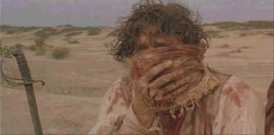

Universal/1968/122m/WS 2.35
 |
Burton holds a bandage to his wounds©Pioneer |
Rafelson mixes many
fine details into this spirited brew. This was Rafelson's baby. He based the script on the
journals of Sir Richard Burton. I guess he's just too referential to the material. The
casting is outstanding. Whatever happened to the star that should have belonged to Patrick
Bergin. The man does command the screen. He's very charismatic and brings off the
adventurous spirit of Burton with flying colors. Iain Glen does a credible job as Speke,
but his character has less flamboyance and it shows in the performance. Fiona Shaw brings
great spirit to the role of Burton's bride. Why is that so many English actresses look so
natural in their surroundings? The little imperfections, like teeth that look natural, or
hips slightly broad.
The film cinematography by Roger Deakins could have been served
better. Mountains of the Moon appears to mastered from composite elements
for DVD as there is cross color in some clothing patterns. Overall there is a slight
softness to the DVD. At least there's no obvious edge enhancement. Color is respectable.
The differences between the English and African color schemes works well. Africa has a
film of gauze that blanches out everything to a slight degree except during the nights of
course, and England is very proper, deeply contrasted. The Dolby Digital 2-channel sound
includes some powerful effects in the surrounds. Dialogue is consistently easy to
understand and the music of Michael Small has plenty of air and sweep.